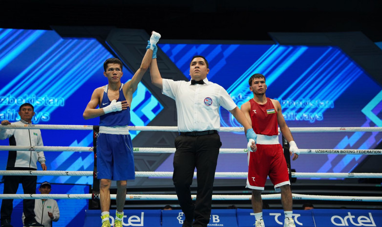
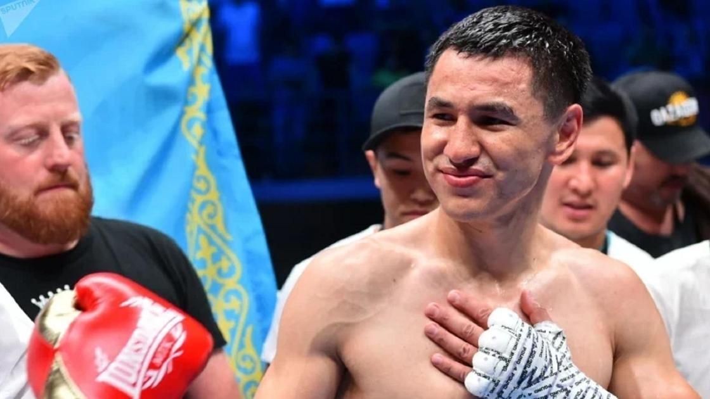

Новости бокса Казахстана

5 апреля 2025
Алимханулы выиграл бой
Жанибек Алимханулы одержал уверенную победу над Анауэлем Нгамиссенже, показав характер и мастерство.
Читать далее

6 июля 2025
Ташкенбай — золото Кубка мира
Санжар Ташкенбай стал победителем этапа Кубка мира по боксу в Астане, завоевав золото.
Читать далее
14 сентября 2025
Оралбай в финале ЧМ-2025
Айбек Оралбай прошёл в финал чемпионата мира по боксу 2025, подтвердив статус сильного бойца.
Читать далее

21 марта 2025
Тураров взял титул в Алматы
Жанкош Тураров нокаутировал своего противника и получил титул IBO в гала-вечер бокса в Алматы.
Читать далее